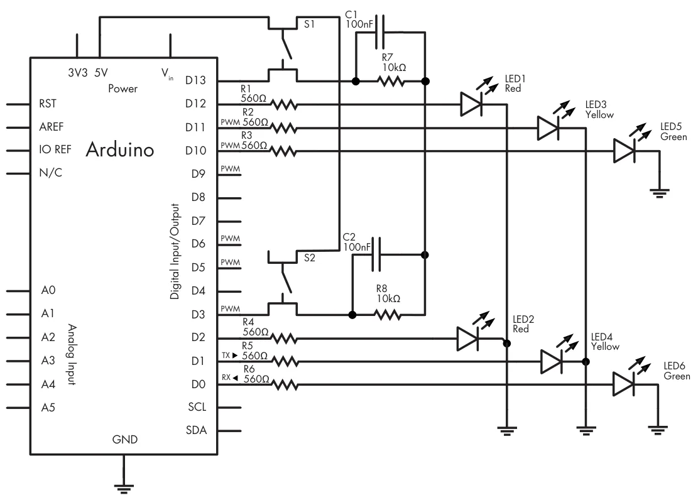
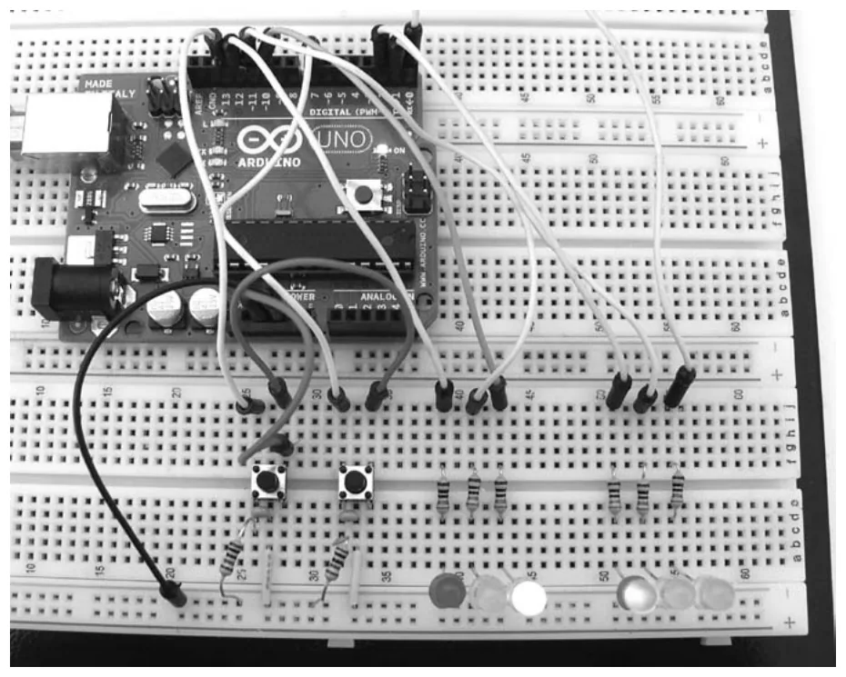

Now let’s put your newfound knowledge to use by solving a hypothetical problem. As the town planner for a rural shire, you have a problem with a single-lane bridge that crosses the river. Every week, one or two accidents occur at night, when tired drivers rush across the bridge without first stopping to see if the road is clear. You have suggested that traffic lights be installed, but the mayor wants to see them demonstrated before signing off on the purchase. You could rent temporary lights, but they’re expensive. Instead, you’ve decided to build a model of the bridge with working traffic lights using LEDs and an Arduino.
The Goal
Our goal is to install three-color traffic lights at each end of the single-lane bridge. The lights allow traffic to flow only in one direction at a time. When sensors located at either end of the bridge detect a car waiting at a red light, the lights will change and allow the traffic to flow in the opposite direction.
The Algorithm
We’ll use two buttons to simulate the vehicle sensors at each end of the bridge. Each set of lights will have red, yellow, and green LEDs. Initially, the system will allow traffic to flow from west to east, so the west-facing lights will be set to green and the east-facing lights will be set to red.
When a vehicle approaches the bridge (modeled by pressing the button) and the light is red, the system will turn the light on the opposite side from green to yellow to red, and then wait a set period of time to allow any vehicles already on the bridge to finish crossing. Next, the yellow light on the waiting vehicle’s side will blink as a “get ready” notice for the driver, and finally the light will change to green. The light will remain green until a vehicle approaches the other side, at which point the process repeats.
The Hardware
Here’s what you’ll need to create this project:
- Two red LEDs (LED1 and LED2)
- Two yellow LEDs (LED3 and LED4)
- Two green LEDs (LED5 and LED6)
- Six 560 Ω resistors (R1 to R6)
- Two 10 kΩ resistor (R7 and R8)
- Two 100 nF capacitors (C1 and C2)
- Two push buttons (S1 and S2)
- One medium-sized breadboard
- One Arduino and USB cable
- Various connecting wires
The Schematic
Because we’re controlling only six LEDs and receiving input from two buttons, the design will not be too difficult. Figure 4-26 shows the schematic for our project.

This circuit is basically a more elaborate version of the button and LED circuit in Project 4, with resistors, more LEDs, and another button.
Be sure that the LEDs are inserted in the correct direction: the resistors connect to LED anodes, and the LED cathodes connect to the Arduino GND pin, as shown in Figure 4-27.

The Sketch
And now for the sketch. Can you see how it matches our algorithm?
// Project 5 - Controlling Traffic
// define the pins that the buttons and lights are connected to:
❶ #define westButton 7
#define eastButton 13
#define westRed 2
#define westYellow 1
#define westGreen 0
#define eastRed 12
#define eastYellow 11
#define eastGreen 10
#define yellowBlinkTime 500 // 0.5 seconds for yellow light blink
boolean trafficWest = true; // west = true, east = false
❸ int flowTime = 10000; // amount of time to let traffic flow
int changeDelay = 2000; // amount of time between color changes
void setup()
{
// setup digital I/O pins
pinMode(westButton, INPUT);
pinMode(eastButton, INPUT);
pinMode(westRed, OUTPUT);
pinMode(westYellow, OUTPUT);
pinMode(westGreen, OUTPUT);
pinMode(eastRed, OUTPUT);
pinMode(eastYellow, OUTPUT);
pinMode(eastGreen, OUTPUT);
// set initial state for lights - west side is green first
digitalWrite(westRed, LOW);
digitalWrite(westYellow, LOW);
digitalWrite(westGreen, HIGH);
digitalWrite(eastRed, HIGH);
digitalWrite(eastYellow, LOW);
digitalWrite(eastGreen, LOW);
}
void loop()
{
if ( digitalRead(westButton) == HIGH ) // request west>east traffic flow
{
if ( trafficWest != true )
// only continue if traffic flowing in the opposite (east) direction
{
trafficWest = true; // change traffic flow flag to west>east
delay(flowTime); // give time for traffic to flow
digitalWrite(eastGreen, LOW); // change east-facing lights from green
// to yellow to red
digitalWrite(eastYellow, HIGH);
delay(changeDelay);
digitalWrite(eastYellow, LOW);
digitalWrite(eastRed, HIGH);
delay(changeDelay);
for ( int a = 0; a < 5; a++ ) // blink yellow light
{
digitalWrite(westYellow, LOW);
delay(yellowBlinkTime);
digitalWrite(westYellow, HIGH);
delay(yellowBlinkTime);
}
digitalWrite(westYellow, LOW);
digitalWrite(westRed, LOW); // change west-facing lights from red to green
digitalWrite(westGreen, HIGH);
}
}
if ( digitalRead(eastButton) == HIGH ) // request east>west traffic flow
{
if ( trafficWest == true )
// only continue if traffic flow is in the opposite (west) direction
{
trafficWest = false; // change traffic flow flag to east>west
delay(flowTime); // give time for traffic to flow
digitalWrite(westGreen, LOW);
// change west lights from green to yellow to red
digitalWrite(westYellow, HIGH);
delay(changeDelay);
digitalWrite(westYellow, LOW);
digitalWrite(westRed, HIGH);
delay(changeDelay);
for ( int a = 0 ; a < 5 ; a++ ) // blink yellow light
{
digitalWrite(eastYellow, LOW);
delay(yellowBlinkTime);
digitalWrite(eastYellow, HIGH);
delay(yellowBlinkTime);
}
digitalWrite(eastYellow, LOW);
digitalWrite(eastRed, LOW); // change east-facing lights from red to green
digitalWrite(eastGreen, HIGH);
}
}
}Our sketch starts by using #define at ❶ to associate digital pin numbers with labels for all the LEDs used, as well as the two buttons. We have red, yellow, and green LEDs and a button each for the west and east sides of the bridge. The Boolean variable trafficWest at ❷ is used to keep track of which way the traffic is flowing—true is west to east, and false is east to west.
The integer variable flowTime at ❸ is the minimum period of time that vehicles have to cross the bridge. When a vehicle pulls up at a red light, the system delays this period to give the opposing traffic time to cross the bridge. The integer variable changeDelay at ❹ is the period of time between the traffic lights switching from green to yellow to red.
Before the sketch enters the void loop() section, it is set for traffic to flow from west to east in void setup().
Running the Sketch
if ( trafficWest == true )Once it’s running, the sketch does nothing until one of the buttons is pressed. When the east button is pressed, the line ensures that the lights change only if the traffic is heading in the opposite direction. The rest of the code section is composed of a simple sequence of waiting and then of turning on and off various LEDs to simulate the traffic-light operation.